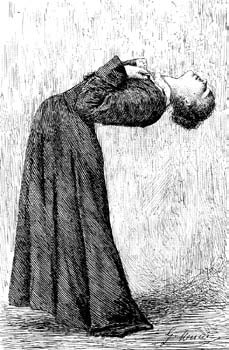
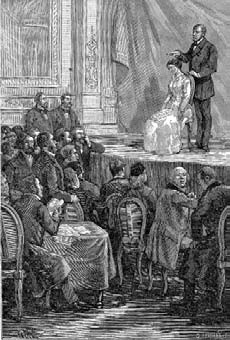
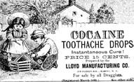

25 Mart 1897, şafak vakti
Chez Magny... Kendimi leziz yemeklere düşkün biri olarak tanımlarım; hatırladığıma göre Contrescarpe-Dauphine Sokağı'ndaki o lokantada adam başı on franktan fazla ödenmiyor ve yemeğin kalitesi ederini karşılıyordu. Her gün Foyot'ya gitmek mümkün değildi. Geçmiş yıllarda pek çok kişi Magny'ye Gautier ya da Flaubert gibi ünlü yazarları uzaktan görebilmek için giderdi; pantolon giyerek dolaşan yoz bir kadının koruması altına aldığı o veremli Polonyalı piyanist daha ortalarda yoktu. Ben bir akşam içeri göz atmış ve hemen çıkmıştım. Sanatçılar uzaktan bile dayanılmaz tiplerdir, onları tanıyor muyuz diye çevrelerine bakınıp dururlar.
Sonra "büyükler" Magny'yi terk etmişlerdi ve Boulevard Poissonnière'de bulunan Brébant-Vachette'e göçmüşlerdi; burada daha iyi yeniyor, daha çok para ödeniyordu ama belli ki carmina dant panem.[2] Ben de Magny seksenli yılların ortasından itibaren arındığı zaman, yeniden gitmeye başlamıştım.
Bilimadamlarının, mesela Berthelot gibi ünlü kimyagerlerin ve Salpêtrière'in doktorlarının oraya gittiğini fark etmiştim. Hastane iki adım ötede değildi ama belli ki hekimler, hasta yakınlarının gittiği pis gargote'larda yemek yerine Latin Mahallesi'nde iki adım atmayı yeğliyorlardı. Hekimlerin konuşmaları ilginç oluyordu, çünkü başkalarının zayıflıkları konu ediliyordu; Magny'de gürültüyü bastırmak için herkes yüksek sesle konuştuğundan, eğitimli bir kulak her zaman ilginç sohbetler yakalayabilirdi. Etrafı gözetlemek belirli bir şeyi öğrenmeye çalışmak değildir. Önemsiz gibi görünen bir şey de, gün gelir işe yarar. Önemli olan, başkalarının senin bildiğini bilmediklerini bilmektir.
Edipler ve sanatçılar ortak masaların çevrelerini doldururlarken, bilimadamları bencileyin yalnız başlarına yemek yiyorlardı. Ama birkaç kez masa komşusu olunca aşinalık başlıyordu. İlk tanışıklığımı Doktor Du Maurier ile kurdum; son derece sevimsiz bu tipe bakınca böyle bir psikiyatrın (öyleydi) bu iğrenç suratını gösterdiği hastalarında nasıl güven uyandırdığını merak ettim. Kıskanç ve mor yüzüyle, kendini ebediyen ikincilik kürsüsünde hissedecek bir tipti. Vincennes'de sinir hastaları için küçük bir klinik işletiyordu ve tedavi kurumunun meşhur Doktor Blanche'ın şöhretini ve kazancını asla yakalayamayacağını biliyordu – Du Maurier ise otuz yıl önce Neval adındaki (ona göre liyakatli bir şairdi) şahsın ünlü Blanche kliniğindeki tedavi sonucunda intihar ettiğini alaycı bir dille fısıldardı.
İyi ilişkiler kurduğum öteki iki müşteri ise Doktor Bourru ve Burot idi; ikiz gibi görünen bu iki ilginç tip hep aynı kesimde siyah takım elbiseler giyerlerdi; kara bıyıkları, köse çeneleriyle tıpatıp aynıydılar; ikisinin de yakalığı her zaman biraz kirliydi, çünkü Paris'te seyyah durumundaydılar, aslında Rochefort Tıp Fakültesi'nde çalışıyorlardı ama ayın birkaç günü başkente geliyor ve Charcot'nun deneylerini izliyorlardı.
"Ne, bugün pırasa yok mu?" diye sormuştu Bourru bir gün huzursuzca. Burot ise dehşet içinde eklemişti: "Pırasa yok mu?"
Garson özür dilerken ben yan masadan müdahale etmiştim: "Ama enfes çayır tekesakalı var. Ben bunu pırasaya yeğlerim." Sonra da gülümseyerek mırıldanmıştım: "Tous le légumes – au claire de lune – étaient en train de s'amuser – et le passants les regardaient. – Les cornichons – dansaient en rond, – les salsifis – dansaient sant bruit..."
Bunun üzerine iki müşteri salsifis yani tekesakalı seçtiler. İşte böylece her ayın iki günü boyunca sürecek zarif bir gelenek başlamış oldu.
"Bakın Mösyö Simonini" diye anlatıyordu Bourru, "Doktor Charcot histeri konusunu derinlemesine inceliyor; bu psikomotor, duyumsal ve vejetatif alanda farklı tepkilerle kendini gösteren bir nevroz türü. Geçmişte rahmin işleyişindeki bazı bozukluklara dayandırılarak sadece kadınlara özgü bir hastalık sanılıyordu ama Charcot histeri belirtilerinin her iki cinste de eşit derecede ortaya çıktığını ve felç, sara, körlük, sağırlık, solunumda, konuşmada, yutmada zorluk yarattığını saptadı."

"Geçmişte rahmin işleyişindeki bazı bozukluklara dayandırılarak sadece kadınlara özgü bir hastalık sanılıyordu..."
"Meslektaşım" diye araya giriyordu Burot, "Charcot'nun belirtileri yok edecek bir tedavi geliştirdiği iddiasında olduğunu söylemedi."
"Ben de oraya geliyordum" diyordu Bourru gücenik bir şekilde. "Charcot düne kadar Mesmer gibi şarlatanların elinde oyuncak olan hipnotizma yolunu seçti. Hastaların hipnoz altında histerinin kaynağını oluşturan travmatik olayları hatırlamasını, bilinçleri yerine gelince de iyileşmesini bekliyor."

"Charcot düne kadar Mesmer gibi şarlatanların elinde oyuncak olan hipnotizma yolunu seçti."
"İyileşiyorlar mı peki?
"İşte asıl önemli nokta bu Mösyö Simonini" diyordu Bourru. "Salpêtrière'de olup bitenler bize bir psikiyatri kliniği değil de tiyatro sahnesi gibi geliyor. Yanlış anlamayın, Ustamızın şaşmaz teşhislerinin niteliği konusunda kuşkumuz yok..."
"Tabii ki bu konuda hiç kuşkumuz yok" diye onaylıyordu Burot. "Ve hipnotizma tekniği kendi..."
Bourru ve Burot bana hipnotizma için kullanılan farklı sistemleri anlattılar; Faria (bana Dumas'yı hatırlatan bu adı duyunca kulaklarımı diktim ama, belli ki Dumas gerçek olaylardan yola çıkıyordu) adındaki rahibin daha şarlatanca kullandığı hipnozdan, gerçek bir öncü olan Doktor Braid'in bilimsel hipnozlarına kadar geniş bir açıklama yaptılar.
"Artık" diyordu Burot, "iyi manyetizmacılar daha basit yöntemler izliyorlar."
"Ve daha etkili" diye vurguluyordu Bourru. "Hastanın gözü önünde bir madalyon ya da anahtar sallanıyor, gözlerini ona dikmesi söyleniyor: İki ya da üç dakika içinde kişinin gözbebekleri sarkaçvari bir harekete giriyor, nabzı yavaşlıyor, gözleri kapanıyor, yüzünde huzurlu bir ifade beliriyor ve bu uyku hali yirmi dakika kadar sürebiliyor."
"Tabii şunu da belirtmeliyim" diye düzeltiyordu Burot, "bu hastaya bağlı bir durum oluyor, çünkü manyetizma –Mesmer sahtekârının istediği gibi– gizemli sıvıların aktarılmasından değil kendi kendine telkin fenomeninden kaynaklanıyor. Hintli büyücüler aynı sonucu dikkatle burunlarının ucuna, Athos Dağı'nın keşişleri de göbek deliğine bakarak elde ediyorlar."
"Biz bu kendi kendine telkin şekillerine pek inanmıyoruz" diye eklemişti Burot, "yine de kendisi hipnotizmaya cidden inanmaya başlamadan önce Charcot tarafından geliştirilen sezgileri uygulamaya koymaktan başka bir şey de yapmıyoruz. Kişilik dönüşümleriyle, mesela kendini bir gün şu, bir başka gün bu kişi sanan ama bu iki kişiliği birbirinden habersiz olan hastalarla ilgileniyoruz. Geçen sene hastanemize böyle bir hasta olan Louis yatmıştı."
"İlginç bir vaka" diye ekledi Bourru, "felçler, uyuşmalar, kasılmalar, kas spazmları, deride aşırı duyarlılık, dilsizlik, ciltte kızarıklıklar, kanamalar, öksürükler, kusmalar, sara krizleri, katatoni, uyurgezerlik, romatizmal kore, dilde bozulmalar gibi şeyler hissediyordu."
"Hatta kimi zaman kendini bir köpek hatta buharlı tren sandığı bile oluyordu" diye ekledi Burot. "Ve ayrıca peşini bırakmayan sanrılar, görme alanında daralmalar, tatsal, kokusal, görsel sanrılar, pseudotüberkolik tıkanmalar, baş ağrıları, mide bulantıları, kabızlık, anoreksi, bulimia, letarji, kleptomani..."
"Sözün özü" diye özetledi Bourru, "sıradan bir tablo. Şimdi biz hipnoza başvurmak yerine hastanın sağ kolu üzerine çelik bir çubuk taktık ve sanki bir mucize olmuşçasına hastamız yepyeni bir kişiliğe büründü. Felç ve duyarlılık sağ tarafta yok olup, bu sefer sol tarafa geçti."
"Başka bir kişi karşısındaydık" diye ekliyor Burot, "bu kişi bir an öncesine ait tek bir şey bile hatırlamıyordu. Louis kişiliklerin birinde ayıkken bir başkasında sarhoşluğa meyilli görünüyordu."
"Dikkatinizi çekerim ki" diyordu Bourru, "bir maddenin manyetik gücü uzaktan da etki ediyor. Örneğin hastanın haberi olmadan sandalyesinin altına alkollü madde içeren bir şişe konuyor. Bu uyurgezerlik halinde hasta sarhoşluğa ilişkin bütün belirtileri gösterecektir."
"Uygulamalarımızın hastanın ruhsal bütünlüğüne saygı gösterdiğini anlamışsınızdır" diye sözü bitirdi Burot. "Hipnotizma, hastanın bilincini yitirmesine yol açarken, manyetizma bir organ üzerinde şiddetli bir sarsıntı değil, sinir ağında aşamalı bir yükleme oluşturuyor."
Bu konuşmanın sonunda vardığım karar, Bourru ile Burot'nun, dalayan, kaşındıran maddelerle zavallı hastalarına eziyet eden iki sersem olduğu şeklindeydi ve yan masadan konuşmayı izleyen Doktor Du Maurier de başını birkaç kez sallayarak bu düşüncemi onaylamıştı.
"Sevgili dostum" diye anlatmıştı bana birkaç gün sonra baş başa kaldığımızda, "hem Charcot hem de bizim Rochefort'lu ikili, hastalarının geçmişlerini ve iki ayrı bilinç halinin ne anlama geldiğini inceleyecekleri yerde onlara hipnotizma ya da metal çubuklarla müdahale etmeye uğraşıyorlar. Problem, pek çok vakada bir kişilikten ötekine geçişin kendiliğinden, hiç beklenmedik zaman ve şekillerde oluşmasıdır. Kendi kendini hipnotize etmekten söz edebiliriz. Bana kalırsa Charcot ve asistanları, Doktor Azam'ın Félida vakasındaki deneyimi üzerinde yeterince durmuyorlar. Bu olgular konusunda hâlâ pek az bilgi sahibiyiz, bellek rahatsızlıkları beynin henüz bilmediğimiz bir noktasına az kan gitmesiyle ilgili olabilir, damarların anlık sıkışmaları histeri krizlerine yol açabilir. Bellek yitimlerinde kan akışı nerede eksik kalır?"
"Nerede?"
"İşte önemli olan nokta budur. Biliyorsunuz, beynimizin iki yarıküresi var. Belki de bazı kişiler bazen bütün yarıküreyle düşünüyorlar, bazen de yarıkürenin tümünü kullanmıyorlar ve bellek yeteneği devre dışı kalıyor. Benim de klinikte Félida'ya çok benzeyen bir hastam var. Yirmi yaşını henüz geçmiş bir genç kız; adı Diana."
Du Maurier bu noktada bir an duralamıştı, sanki gizli bir şeyi itiraf etmekten korkar gibiydi.
"Bir akrabası iki yıl önce onu bana emanet etti ve sonra da öldü; tabii artık para da ödenmiyor ama ne yapayım, hastayı sokağa mı atayım? Geçmişi hakkında pek az bilgiye sahibim. Anlattıklarından çıkardığıma göre, erişkinliğe adım attığından beri her beş ya da altı gün boyunca, bir heyecanın ardından şakaklarında ağrı hissediyormuş ve sonra sanki uykuya benzer bir hale geçiyormuş. Onun uyku diye nitelendirdiği durum aslında histeri krizi: Uyandığında ya da sakinleştiğinde, önceki halinden çok farklı oluyor; Doktor Azam'ın ikincil durum adını verdiği hale giriyor. Normal diye nitelendirebileceğimiz haldeyken Diana bir masonik örgütün müridi gibi davranıyor... Beni yanlış anlamayın, ben de Büyük Doğu'ya, düzgün insanların mason örgütüne üyeyim ama, belki bilirsiniz, tapınak geleneğinden farklı büyük localar vardır ve bunların bazılarında okült bilimlere eğilimler olur ve bunlardan bazılarında (elbette ben bunlardan birinde değilim) satanik ayinlere heves edilir. Maalesef normal olarak tanımlayacağım hallerinde Diana kendini Lusifer'in müridi ya da benzeri bir şey sanıyor; ahlaksız konuşmalar yapıyor, açık saçık öyküler anlatıyor, hastabakıcıları hatta beni baştan çıkartmaya çalışıyor; böyle utanç verici bir şeyi söylemekten edep ederim, çünkü Diana güzel olarak nitelendirilecek bir kadın. Sanıyorum bu halde ergenlik sırasında yaşadığı sarsıntıları yeniden hissediyor ve ikincil durumuna geçerek bu anılardan kaçmaya çalışıyor. Bu haldeyken, Diana uysal ve masum bir kız, iyi bir Hıristiyan olarak görünüyor, sürekli dua kitapları istiyor, ayine gitmek için dışarı çıkmayı arzu ediyor. Ama Félida'nın da yaşadığı o özel halde olduğu üzere, Diana'nın ikincil durumunda yani erdemli Diana normal durumunu hatırladığında son derece üzülüyor, nasıl böyle şeytani davranabildiğine şaşıyor, kaba bir bezle kendini cezalandırmaya uğraşıyor; öyle ki bu hali onun ikincil durumunu neden oluşturan durum olarak adlandırıyor ve normal durumunu sanrıların pençesine düştüğü durum sanıyor. Oysa normal durumundayken Diana ikincil durumunda neler yaptığını hiç hatırlamıyor. Bu iki durum beklenmedik döngülerle ortaya çıkıyor ve bu ya da öteki durumunda günlerce kalabiliyor. Doktor Azam'ın mükemmel uyurgezerlik tanımına aynen katılıyorum. Hatta sadece uyurgezerler değil, uyuşturucu, haşhaş, güzelavratotu, afyon kullananlar, alkol tüketimini abartanlar da kendilerine geldiklerinde hatırlamayacakları şeyler yaparlar."
Diana'nın hastalığının anlatımı beni neden ilgilendirdi bilmiyorum ama, Du Maurier'ye şöyle dediğimi anımsıyorum: "Böyle acınası durumdaki insanlarla ilgilenen bir tanıdığıma ondan söz edeceğim; belki öksüz bir kızı konuk edecek bir yer biliyordur. Dinsel kurumlarla ilgili çevrelerde son derece kudretli bir din adamını, rahip Dalla Piccola'yı yollayacağım size."
Yani ben Du Maurier ile konuşurken, Dalla Piccola'nın en azından adını biliyordum. İyi ama bu Diana için neden bu kadar üzülmüştüm?
Saatlerden beri aralıksız yazıyorum, başparmağım acıyor ve yemeğimi bile yazı masamda yedim; ekmeğe pâté ve tereyağı sürdüm, belleğimi canlandırmak için de birkaç kadeh Château Latour içtim.
Kendimi ödüllendirmek isterdim; ne bileyim Brébant-Vachette'e bir ziyarette bulunabilirdim ama kim olduğumu anlayana kadar ortalıkta görünmemeliyim. Gene de eninde sonunda yiyecek bir şeyler satın almak için Maubert Meydanı'na çıkmak zorundayım.
Şimdilik bunlara kafa yormayalım ve yeniden yazmaya koyulalım.
O yıllarda (sanırım Seksen Beş ya da Seksen Altı idi) Magny'de Avusturyalı (ya da Alman) doktor diye hatırladığım o kişiyle tanışmıştım. Şimdi adı da geldi aklıma, evet, adı Froïde idi (sanırım böyle yazılıyor). Otuzlu yaşlarındaki bu doktor daha iyisine gücü yetmeyeceği için yemeğe Magny'ye geliyordu; o dönemde Charcot'nun yanında asistandı. Genellikle yanımdaki masaya otururdu; başlangıçta birbirimizi nazik bir baş hareketiyle selamlıyorduk. Melankolik ve biraz tedirgin bir tip olduğu kararına varmıştım; kaygılarını boşaltmak için birilerinin onun iç döküşlerini dinlemesini ürkekçe ister gibi bir hali vardı. İki ya da üç sefer birkaç kelime konuşabilmek için bahane yaratmıştı ama ben pek yüz vermemiştim.
Froïde ismi Steiner ya da Rosenberg gibi görünmese de Paris'te yaşayan ve zenginleşen bütün Yahudilerin Alman adı taşıdıklarını biliyordum ve karga burnundan kuşkulanarak günün birinde Du Maurier'ye bunu sormuştum ama o şöyle bir el işareti yaparak "Ben pek bilmiyorum ama her halükârda uzak duruyorum, çünkü Yahudi ve Alman olunca hiç hoşlanmadığım bir karışım çıkar ortaya" demişti.
"Avusturyalı değil mi?" diye sormuştum.
"Ne fark eder ki? Aynı dil, aynı düşünce tarzı. Champs-Élysées boyunca yürüyen Prusyalıları unutmadım."
"Hekimlik mesleğinin Yahudiler arasında pek gözde olduğu söyleniyor, aynen tefecilik gibi. Tabii ki paraya gereksinme duymayalım ve hasta olmayalım."
"Ama Hıristiyan hekimler de var" diye buz gibi gülmüştü Du Maurier.
Pot kırmıştım.
Parisli entelektüellerin bazıları Yahudilere karşı duydukları tiksintiyi dile getirmeden önce en iyi arkadaşlarından bazılarının Yahudi olduğunu söyler. İkiyüzlülük. Benim hiç Yahudi arkadaşım yok (Tanrı beni korusun); hayatım boyunca Yahudilerden uzak durdum. Belki de onları sezgisel bir şekilde görmezden geldim, çünkü Yahudi (ne tesadüf ki, aynen Alman gibi) kokusundan anlaşılır (bunu Victor Hugo da söyler: fetor judaica); kulamparalar gibi onların da ayırt edici özellikleri vardır. Dedem bana onların kokusunun fazlasıyla sarmısak ve soğan tüketmelerinden kaynaklandığını hatırlatırdı; belki ağdalı şekerle ağırlaştırılmış kaz ve koyun eti de etken olabilir. Ama bence ırk, hastalıklı kan, yağlı yiyecekler yüzünden böyle. Bunların hepsi de komünisttir, bakınız Marx ve Lasalle, işte bu konuda benim Cizvitler kırk yılda bir haklı çıktılar.
Yahudilerden uzak durabildim, çünkü adlarına dikkat ederim. Avusturyalı Yahudiler zenginleşince kendilerine çiçekleri, değerli taşları ya da soylu metalleri andıran şirin soyadları satın alıyorlardı; Silbermann ve Goldstein bunların en iyi örnekleridir. Daha yoksullar ise Grünspan (bakır yeşili) gibi adlar satın alıyorlardı. İtalya'da olduğu gibi Fransa'da da Ravenna, Modena, Picard, Flamand gibi kent ya da yer adlarının arkasına gizlendiler; kimi zaman da devrimci takvimden esinlendiler (Froment, Avoine, Laurier) ve bunda kendilerince haklıydılar, çünkü kralın kellesinin gitmesi babalarının gizli çalışmaları sonucu gerçekleşti. Ama Yahudilerin ardına gizlendikleri adlara da dikkat etmeli; örneğin Maurice Musa'dan, İsidore İshak'tan, Eduard Harun'dan, Jacques Yakub'dan, Alphonse ise Âdem'den gelir...
Sigmund Yahudi adı mıdır? Sezgisel bir biçimde o hekim parçasına yüz vermeme kararı almıştım ama bir gün, tuzluğuna uzanan Froïde onu devirmişti. Masa komşuları arasında var olan nezaket kurallarına uymak gerektiğinden benimkini uzattım ve o sırada tuz dökmenin bazı ülkelerde uğursuzluk kabul edildiğini söyledim; o ise gülerek batıl inançları olmadığı yanıtını verdi. O günden sonra birkaç kelime etmeye başladık. O zorlandığını söylediği Fransızcası için özür diliyordu ama kendini gayet güzel ifade ediyordu. Yahudiler ezelden göçebe olduklarından bütün dillere uyum sağlamak zorundadırlar. Kibar bir şekilde şöyle dedim: "Sadece kulağınızı biraz daha alıştırmalısınız." O da minnetle gülümsedi bana. Yılışık.
Froïde Yahudi olduğu gibi yalancıydı da. Onun ırkından olanların sadece özel hazırlanmış ve özel biçimde pişirilmiş yemekler yemeleri gerektiğini duymuştum ve bu nedenle gettolarda yaşarlardı; oysa Froïde Magny'de önüne ne getirilirse afiyetle yutuyordu; yemekte bir bardak bira içmekten de kaçınmıyordu.
Ama bir akşam sanki ipin ucunu bırakmaya karar verdi. Zaten iki bira içmişti ve yemekten sonra sinirli bir biçimde sigarasını tüttürürken üçüncü birayı istedi. Ellerini sallayarak konuşurken, bir noktada tuzluğu ikinci kez devirdi.
"Sakar değilimdir" diye özür diledi, "ama gerginim. Üç gündür nişanlımdan mektup alamıyorum. Benim yaptığım gibi her gün yazmasını beklemiyorum zaten ama bu sessizlik beni huzursuz ediyor. Sağlık durumu hassastır ve yanında olamadığım için çok mutsuzum. Ayrıca yaptığım her şeyde onun onayını almak istiyorum. Charcot'da yediğim akşam yemeği hakkında ne düşündüğünü yazsın diye bekliyordum, çünkü biliyor musunuz Mösyö Simonini, geçenlerde bir akşam bu yüce insanın evine akşam yemeğine davet edildim. Bu her genç vizite hekiminin, hele hele bir yabancının alabileceği bir davet değil."
İşte demiştim, kendi kendime, küçük sonradan görme Sami, kariyer yapmak için sinsice iyi ailelere sokuluyor. Nişanlısı yüzünden yaşadığı gerilim Yahudi'nin cinselliğe yönelik kösnül doğasından kaynaklanmıyor muydu? Onu geceleri düşünüyorsun değil mi? Belki de onun hayalini kurarak kendine dokunuyorsun; senin de Tissot okuman iyi olur. Ama, bırakmıştım ki içini döksün.
"Pek nitelikli konuklar vardı; Daudet'nin oğlu, Pasteur'ün asistanı Doktor Strauss, Enstitü'den Profesör Beck ve büyük İtalyan ressam Emilio Toffano. Akşam bana on dört franga mal oldu: Hamburg'dan güzel, siyah bir kravat, beyaz eldivenler, yeni bir gömlek ve hayatımda ilk kez frak aldım. Ve hayatımda ilk kez sakalımı Fransız usulü kısalttırdım. Çekingenliğim konusunda da, dilimi çözebilmek için biraz kokain çektim."
"Kokain mi? O bir zehir değil mi?"
"Abartılı miktarlarda kullanılırsa her şey zehirdir, şarap bile. Ama ben iki yıldan beri bu mucizevi maddeyi inceliyorum. Bakın, kokain Amerikan Kızılderililerinin And Dağları'nın yüksekliğine dayanabilmek için çiğnedikleri bir bitkiden elde edilen bir alkaloiddir. Afyon ve alkolden farklı olarak heyecan veren zihin durumları yaratır ama bunun yanında olumsuz bir etki yapmaz. Analjezik olarak özellikle oftalmoloji ve astım tedavisinde mükemmel; alkolizm ve uyuşturucu bağımlılığı tedavisinde kullanılır, deniz tutmasına iyi gelir, şeker hastalığının tedavisinde işe yarar, ayrıca açlığı, uykuyu, yorgunluğu gidermekte mucizeler yaratır; tütünün yerini tutar, sindirim bozukluğunu, gazı, bağırsak sancısını, mide ağrısını, hastalık hastalığını, omurga sorunlarını, saman nezlesini iyileştirir, veremlileri güçlendirir, migreni tedavi eder, akut diş çürüklerinde, dişe yüzde dört oranında hazırlanmış solüsyonla ıslatılmış pamuk bastırılırsa ağrı hemen geçer. Ama en harikulade sonuçları depresyon hastalarına güven vermekte alıyoruz; onları neşelendiriyor, etkin ve iyimser kılıyor."

"Akut diş çürüklerinde, dişe yüzde dört oranında hazırlanmış solüsyonla ıslatılmış pamuk bastırılırsa ağrı hemen geçer."
Doktor artık dördüncü bardağa geçmişti ve olasılıkla hüzünlü bir esrime içindeydi. Sanki itiraflarda bulunmak istercesine bana doğru uzanıyordu.
"Kokain, sevgili Martha'ma hep söylediğim üzere benim gibi biri için mükemmel bir madde; hani ben pek çekici sayılmam, gençliğimde hiç genç olamadım, şimdi otuz yaşıma geldim ama olgunlaşamıyorum. Baştan sona hırs ve öğrenme delisi olduğum bir dönemim oldu ama günden güne, tabiat ananın bazılarına bahşettiği o deha mührünü sevecen bir anında bana vurmamış olmasından ötürü kendimi mutsuz hissetmeye başladım."
Ruhunu bütün çıplaklığıyla ortaya koyduğunu fark eden biri gibi ansızın duruvermişti. Seni gidi minik, şikâyetçi Yahudi seni, demiştim içimden. Ve onu utandırmaya karar vermiştim.
"Kokainden bir afrodizyak olarak söz edilmiyor mu?" diye sormuştum.
Froïde kızarmıştı: "Böyle bir erdemi de var, en azından bana öyle geliyor ama... elimde ciddi bir deneme sonucu yok. Erkek olarak bu tür konulara duyarlı değilimdir. Hekim olarak da cinsellik beni çok çeken bir konu değil. Oysa Salpêtrière Hastanesi'nde de cinsellikten fazla söz edilir oldu. Charcot, hastalarının birinin, Augustine adındaki bir kadının, histeri krizlerinin ileri bir aşamasında bunun başlangıç travmasının çocukken yaşadığı cinsel tacizden kaynaklandığını fark etmiş. Histeriyi alevlendiren travmaların cinsellikten kaynaklanabileceğini yadsımıyorum; asla böyle bir şey söylemem. Sadece her şeyi cinselliğe bağlamak bana abartılı bir tutum gibi geliyor. Ama belki benim küçük kentsoyluluğumun pruderie'si beni bu sorunlardan uzak tutuyor."
Hayır, diye geçiriyordum içimden, bu senin pruderie'n değil, ırkının bütün sünnetlileri gibi kafayı cinselliğe takmışsın ama bunu unutmaya çalışıyorsun. O pis ellerini Martha'cığına değdirip ona küçük Yahudilere özgü işler yaptığını ve onun yorgunluktan canını çıkartıp verem ettiğini görmeyi çok isterdim.
Bu arada Froïde anlatmayı sürdürüyordu: "Sorunum şu ki, kokainim kalmadı ve yeniden melankolinin kuyularına yuvarlanıyorum; eski zaman doktorları olsa bana kara safra birikimi tanısı koyarlardı. Bir ara Merck ve Gehe'nin preparatlarını buluyordum ama onlar artık ana maddenin kalitelisini bulamadıkları için üretime son verdiler. Taze kokain yaprakları yalnızca Amerika'da işlenebiliyor ve en iyi üretim Detroitli Parke ve Davis'e ait; onlarınki daha çözünebilir, saf beyaz renkte ve aromatik bir kokuya sahip. Yeterince birikimim vardı ama şimdi tükendi ve ben burada, Paris'te kime başvuracağımı bilemiyorum."
Maubert Meydanı'nın ve çevresinin bütün sırlarını bilen biri için bu dert değildi. Sadece kokain değil, bir elmas, içi saman doldurulmuş bir aslan, bir damacana dolusu zaçyağı bile arıyor olsam kime başvuracağımı bilirdim; ertesi gün nereden aldıklarını sormama gerek bile bırakmadan getirirlerdi. "Benim için kokain bir zehirdir" diye düşünüyordum ve bir Yahudi'yi zehirlemek hoşuma giderdi. Bunun üzerine Doktor Froïde'a birkaç gün içinde istediği alkaloidden bol miktarda temin edebileceğimi söyledim. Froïde yöntemlerimin kusursuz olacağından kuşku duymamıştı. "Bilirsiniz ya" demiştim ona, "biz antikacılar her türlü insan tanırız."
Bütün bunların benim sorunumla ilgisi yoktu ama sonunda onunla yakınlık kurduk, şundan bundan söz ettik. Froïde konuşkan ve komikti; belki de yanılıyordum ve o bir Yahudi değildi. Onunla sohbet etmek, Bourru ve Burot ile konuşmaktan daha zevkliydi; sonunda söz bu ikilinin yaptıkları deneylere gelince Du Maurier'nin hastasını anlatmadan edemedim.
"Siz" diye sordum, "böyle bir hastanın Bourru ve Burot'nun mıknatıslarıyla iyileştirilebileceğine inanıyor musunuz?"
"Sevgili dostum" diye yanıtlamıştı beni Froïde, "incelediğimiz vakaların pek çoğunda fiziksel görüntüye fazlasıyla önem veriliyor; eğer bir hastalık boy gösteriyorsa bunun büyük olasılıkla ruhsal kökenlerden kaynaklandığını unutuyoruz. Ve eğer köken ruhsalsa, tedavi edilmesi gereken de ruhtur, beden değil. Travmatik bir nevrozda hastalığın gerçek nedeni genellikle basit olan bir hasar değil, tam tersine dipteki ruhsal sarsıntıdır. İnsan güçlü bir heyecan yaşadığında bayılmaz mı? O zaman sinir hastalıklarıyla uğraşan kişi için sorun duyuların nasıl yitirildiği değil, bunların yitirilmesine yol açan heyecanın hangisi olduğunu bulmaktır."
"İyi ama bu heyecanın hangisi olduğu nasıl bulunur ki?"
"Bakın sevgili dostum, Du Maurier'nin hastasında olduğu üzere, alenen histerik belirtiler varsa, o zaman hipnoz, yapay olarak aynı belirtileri ortaya çıkartabilir ve bununla gerçekten kökendeki travmaya ulaşılabilir. Ama bazı hastalar öyle dayanılmaz bir deneyim yaşamışlardır ki, bunu silmek istemişlerdir; sonuç olarak bu olayı ruhlarının ulaşılması mümkün olmayan bir köşesine, hipnozla bile inilemeyecek bir derinliğe saklamışlardır. Öte yandan, hipnoz altındayken neden uyanık olduğumuzdan daha canlı zihinsel yeteneklere sahip olalım ki?"
"O halde hiç bilemeyeceğimiz..."
"Benden açık ve kesin bir yanıt beklemeyin, çünkü henüz tam biçim kazanmamış düşüncelerimi itiraf ediyorum size. Bazen o derin bölgeye yalnızca rüya görülürken varılır diye düşünmeye meylediyorum. Rüyaların açıklayıcı olabileceğini eskiler de söylüyorlardı. Bir hasta günler ve günler boyunca dinlemeyi bilen bir insanla konuşsa, ve hatta ona rüyalarını anlatsa, kökendeki sarsıntı ansızın su yüzüne çıkabilir ve kendini açabilir. İngilizcede talking cure diye bir kavram var. Siz de yaşamışsınızdır; çok geçmişte kalmış bir olayı birine anlatırken, unuttuğunuz ya da unuttuğunuzu sandığınız ayrıntıları hatırlamaya başlarsınız; oysa bunlar beyninizin gizli bir kıvrımının içinde saklanmıştır. Bu yeniden oluşturma olgusu ne kadar minik olursa olsun, içinden bir öykü çıkabilir; ne diyorum yahu ben; daha doğrusu, anlamsız bir olayın, bir nüansın öylesine rahatsızlık verecek bir etkisi olur ki bu... nasıl desem, bir Behebung, bir Beseitigung, tam doğru terimi bulamıyorum, İngilizcede removal diyebiliriz, Fransızcada insanın bir organı kesildiğinde nasıl denir... une ablation? Sanırım en doğrusunu Almanca söyleyebilirim: Entfernung."
İşte su yüzüne çıkan Yahudilik diye düşünüyordum. Sanırım o dönemde Yahudilerin farklı komplolarıyla ve Hıristiyanların zihnini ve bedenini kontrol edebilmek için çocuklarını okutup hekim ve eczacı yapma tasarılarıyla ilgileniyor olmalıydım. Hastalandığımda kendimi senin ellerine teslim edeyim; sana bilmediklerim dahil, hakkımda her şeyi anlatayım ve sen benim ruhumun efendisi ol, ister miydin? Bu Cizvit rahibe konuşmaktan da beter bir durumdu, çünkü onunla hem bir ızgaranın arkasından konuşurdum hem de her şeyi anlatmaz, başkalarının yaptığı gibi ve herkes için eşit olan terimleri kullanarak dökerdim içimi: Çaldım, zina ettim, babamı ve annemi onurlandırmadım. Dilin bile sana ihanet ediyor, bir organın çıkartılmasından söz ederken sanki beynimi sünnet etmek ister gibisin.
Ama bu arada Froïde gülmeye başlamış ve bir bira daha ısmarlamıştı.
"Gene de size söylediğim her şeye kulak asmayın. Bunlar tutarsız birinin hayalleri. Avusturya'ya dönünce evleneceğim ve ailemi geçindirebilmek için bir muayenehane açacağım. İşte o zaman Charcot'nun öğrettiği üzere, hipnozu bilgece kullanacağım ve burnumu hastalarımın rüyalarına sokmayacağım. Ben falcı değilim. Du Maurier'nin hastasına biraz kokain vermek iyi gelir mi acaba diye düşünüyorum."
Bu konuşma böyle sona ermiş ve belleğimde pek az iz bırakmıştı. Ama şimdi Diana'nın değilse bile hafızasının bir kısmını yitirmiş normal bir insanın durumuna düşmüş olabileceğim için yeniden her şeyi hatırlamaya başladım. Froïde'un nerede olduğunu bilmiyordum ama zaten gidip de bütün hayatımı değil bir Yahudi'ye iyi bir Hıristiyan'a bile asla anlatmazdım. Mesleğim yüzünden (hangisi?) başkalarının başına gelenleri para karşılığı aktarmalı ama kendi yaşadıklarımı dile getirmekten kaçınmalıyım. Gene de kendi olaylarımı kendime anlatabilirim. Bourru'nun (ya da Burot) bana bazı büyücülerin göbek deliklerine bakarak kendi kendilerini hipnotize ettiklerini anlatışını hatırladım.
İşte bu nedenle, gerisin geriye aksa da bu günlüğü tutmaya karar verdim. Anlamsız görünen ayrıntılar dahil, adım adım ve hatırlayabildikçe kendi geçmişimi kendime anlatmaya karar verdim: Travmayı yaratan unsur (ne deniyordu ona?) ortaya çıkana kadar bunu sürdüreceğim. Tek başıma. Kendimi deli doktorlarının ellerine bırakmadan, tek başıma iyileşmek istiyorum.
Başlamadan önce (ama zaten dün başladım bile) bu kendi kendine hipnoza gerekli ruh haline girebilmek amacıyla Montorgueil Sokağı'na, chez Philippe'e gidebilsem iyi olurdu. Sakin sakin oturur, akşamüstü altıdan gece yarısına kadar sunulan mönüyü uzun uzun inceler, sonra potage à la Crécy, kapari soslu kalkan balığı, dana eti ve langue de veau au jus ve bitirmek için de acı kiraz likörlü bir sorbe ve minik pastacıklar ısmarlardım; bütün bunları da iki şişe eski Burgonya şarabıyla ıslatırdım.
O arada saat gece yarısını geçerdi ve gece mönüsünü dikkate alırdım: Kendime minik bir kaplumbağa etinden konsome (Dumas'nın yaptığı leziz bir tane geldi aklıma – yani ben Dumas'yı tanıdım mı?); taze soğanlı ve Cava biberi ekilmiş enginarlı bir tabak somon ikram eder, bunu da romlu sorbe ve baharlı İngiliz pastacıklarıyla sonlandırırdım. Gecenin iyice ilerleyen saatlerinde kendime sabah mönüsünden bir armağan verirdim; bu da Halles hamallarıyla aynı anda yudumlayacağım ve onlarla paylaştığımı düşüneceğim bir soupe aux oignons olurdu. Ve sonra etkin bir sabah yaratabilmek için koyu bir kahve ve konyak ve kirsch karışımı olan pousse-café yudumlardım.
Evet, kendimi biraz ağır hissedebilirdim ama ruhum yatışmış olurdu.
Ah, ne yazık ki kendime bu izni vermem mümkün değildi. Belleğim yerinde değil, diye düşündüm; olur da lokantada beni tanıyan biriyle karşılaşırsam onu tanıyamayabilirdim. O zaman nasıl davranırdım?
Bu arada dükkâna beni görmeye gelen biri olursa onun karşısında nasıl bir tavır takınmam gerektiğini de sorguladım. Bonnefoy vasiyetnamesini yazdırmaya gelen şahısla ve kutsal ekmek getiren kadınla işim rast gitti ama gitmeyebilirdi de. Kapının dışına "Dükkân sahibi bir ay için burada olmayacaktır" yazılı bir karton astım; ayın ne zaman başlayıp ne zaman biteceği belli değildi. Daha fazlasını çözene kadar eve kapanmalıydım ve sadece yiyecek bir şeyler almak için çıkmalıydım. Belki de biraz aç kalmam iyi olacaktı, belki de başıma gelenler bu abartılı şölen sofralarının sonucuydu, kim bilir? Ne zaman? Meşhur 21'i akşamı mı?
Ve eğer geçmişimi yeniden gözden geçirmeye başlamak zorundaysam, Burot'nun (yoksa Bourru mu?) dediği üzere göbek deliğime mi konsantre olmalıydım; yaşım icabı iyice obez biri olarak bu koca göbeğim yüzünden önce aynaya bakmayı hatırlamam gerekiyordu.
Oysa dün bu yazı masasının başına oturdum ve hiç ara vermeden, hiç dikkatimi dağıtmadan, sadece arada sırada ağzıma birkaç lokma atarak ve evet, kendimi sınırlamadan içerek yazmaya başladım. Bu evin en iyi yanı iyi bir mahzeni olması.